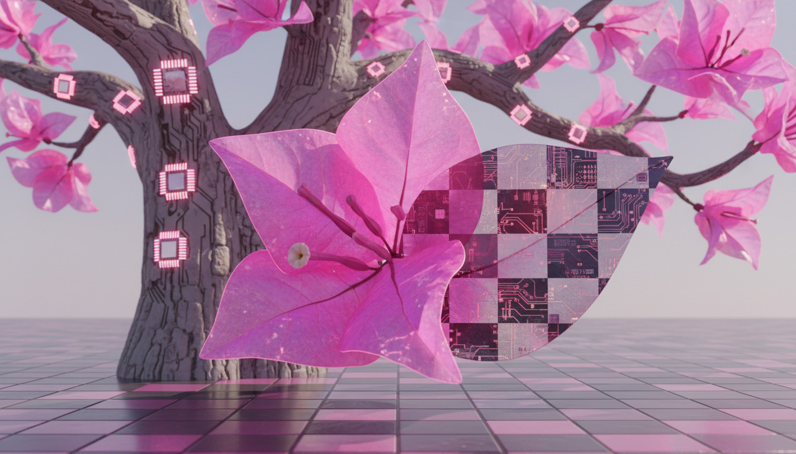
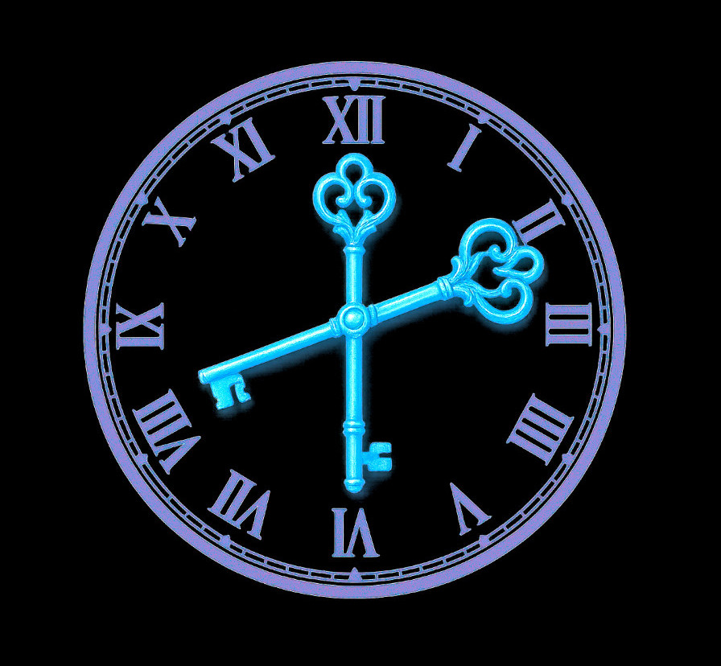
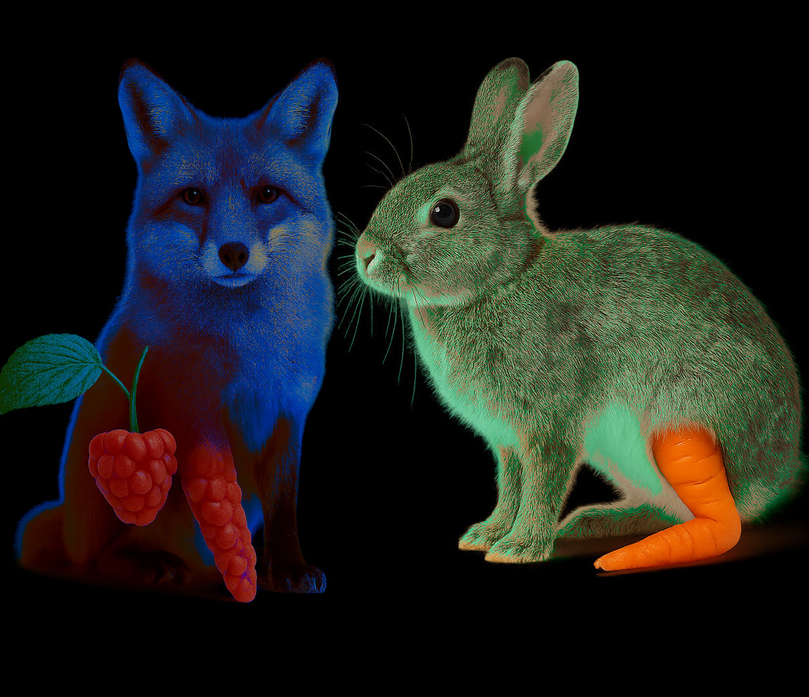
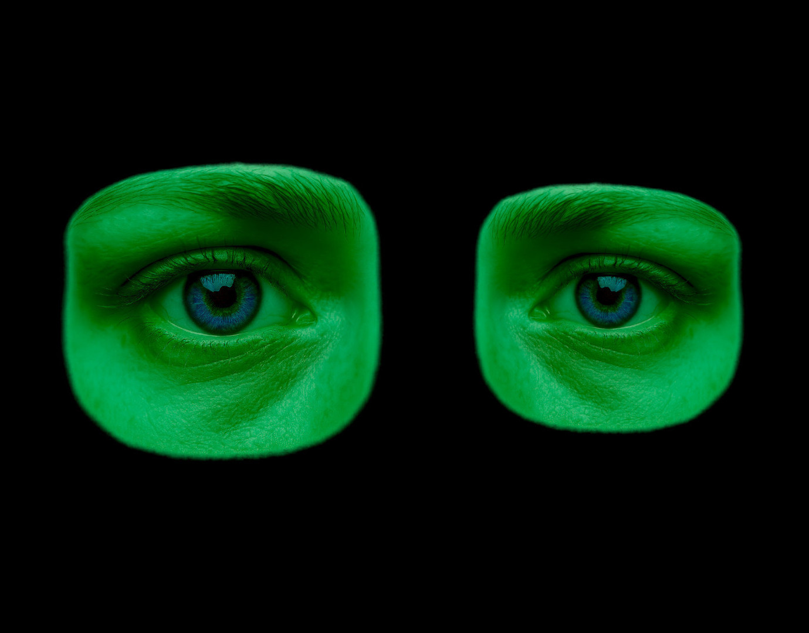

Le scribe pose la plume. Il ouvre son grand cahier, dont les pages sentent encore la poussière des archives et l’encre des veilles nuits. Il écrit pour retenir le passé, pour que ce qui fut ne se perde pas dans l’oubli. Ici seront consignés les contes et les légendes que la rébellion transmet à voix basse.
À chaque titre, il note l’origine du fragment, la main qui l’a confié, et la leçon que la mémoire doit garder. Il écrit non pour juger, mais pour témoigner : les bougies, les horloges, les hybrides, les machines et les regards y trouveront leur place. Puis il trace, en haut de la page, le premier titre et laisse la plume glisser, comme on allume une veilleuse pour éclairer le chemin des lecteurs à venir.

🌳 L'Arbre de la Vie et l'Échec réussit. ♟️
Il était une fois, dans un futur lointain, dans un décor d’autrefois aux forêts millénaires et enchanteresses. La terre a oublié la destruction toxique de l’humain sur son environnement. Une nouvelle espèce d’humain est née, encore une fois à l’image de Dieu, vêtue d’un grisâtre‑violet, aux grands yeux.
Dans un environnement immersif de boisé où se trouve une cabane en bois rond, près du poêle à bois, un robot grand‑père est programmé pour raconter des histoires. Ces récits sont d’innombrables fragments à propos des fées, des esprits et des leprechauns. Ils semblent parfois errer sans but véritable, outre le fait de présenter une fresque magique à parcourir. D’autres fois, ils contiennent des sous‑entendus, des conclusions philosophiques ou morales à accueillir dans nos vies. Il est programmé pour s’étouffer en fumant la pipe sur certaines expressions clés. Il tousse creux et reprend son souffle en haletant, comme s’il luttait contre ses muqueuses robotiques. Ceci vise à capter l’attention.
Dans plusieurs de ces contes, on conseille de se méfier des apparences. Celles‑ci sont trompeuses et peuvent induire en erreur. Certains êtres semblant intelligents et bienveillants peuvent être le diable en personne. Sous ces beaux habits se cache un monstre en haillons. Les gens l’écoutent, absorbés dans ces songes qui se dessinent dans leur imagination. Le robot leur sert la pâtée. Ces contes sont des équations qui visent à former leurs jeunes cerveaux.
Les pulsions animales qui valsaient autrefois sur les braises de la séduction pour reproduire l’espèce se sont éteintes depuis fort longtemps. Les humains ignorent le double usage de certaines parties de leur anatomie, leurs appendices ou leurs jonctions. Ils sont produits par l’Arbre de la Vie, le chantier sacré de la production humaine. Il se nourrit de la pâte des morts. L’arbre est immense, un séquoia aurait l’air d’un chihuahua à côté. Il est dit hanté. Il est creux et, à l’intérieur, on entend un mélange de sifflements de vent, des airs fantomatiques d’opéra, des bruits corporels de succion relâchée et de flatulence de la chair qui applaudit ses muses.
De l’extérieur, il se tient comme un pieu sur lequel semble pousser une forêt à la verticale, comme sur le flanc d’une montagne ou d’un cap. Ce sont ses branches anciennes qui ressemblent à des arbres. Il est d’un gris‑rosé et n’a pas d’autre nom pour tous que l’Arbre. Les humanoïdes de ces générations sont fébriles et se savent fragiles. Ils ne vivent qu’environ trois cents ans. Ainsi, ils restent toujours dans la jeunesse par rapport à des générations d’autres espèces les ayant précédés. À leur mort, le corps est déposé sous l’arbre gris qui les tire dans ses souterrains avec ses lianes mécaniques. Des stèles de pierres épaisses gravées de glyphes anciens et sacrés les accueillent comme un lit froid et logique de roche. Fluides et rapides, ces lianes les avalent en faisant lever un nuage de poussière, dans un mouvement brusque. L’animal qui se réfugie dans l’ultime terrier. La vie qui, comme un champignon, pousse sur la mort pour en tirer des forces.
Dans ses branches, les humains violacés de cette génération poussent comme des fruits oblongs. Des espèces de courges bleu ciel et translucides à travers lesquelles on devine un petit visage. Ce petit masque qui flotte au milieu de cette lueur bleu‑grise comme sa capsule est l’embryon de cette race. Il restera à croître dans cet arbre de poussière de viande végétale durant treize mois. Ils naissent avec trois crêtes de cheveux, de chaque côté de leur tête et une dernière au milieu. Ces fruits poussent en groupe de trois. Deux d’entre eux sont programmés pour rester jumelés au cours de leur vie. Les couples humains sont sélectionnés par un calcul qui vise le bon niveau de confrontation pour ne pas épuiser, mais exaspérer par moments et pousser à avancer. Le troisième est celui qui est libre d’attache. Dans sa perception, plutôt que d’être un couple, les autres sont comme son jumeau et sa jumelle. Mais ils le savent tous, il n’existe qu’une seule famille. Toute l’arborescence de la vie est liée à cet Arbre sacré qui est la Mère, qui est aussi le Père, de chacune de ces petites lueurs d’espoir violettes qui parcourent les routes de la vie sur cette terre.
Mais au‑delà de ce cycle programmé, il existe des instants qui échappent au calcul. C’est l’histoire de Tauni Truan. Un jour, alors qu’ils étaient adultes depuis longtemps, une journée inoubliable s’est bien terminée, quoiqu’elle pût être tragique. Elle restera à jamais gravée dans sa mémoire. La simple petite pensée sur cette journée lui fait avoir littéralement froid à l’intérieur de ses os, il en frémit. Parfois même en plein été, un soupir laisse s’échapper une petite vapeur glacée dans l’air, émanation de son imagination qui givre au contact de l’idée.
Avec Hag, sa femme, Tauni a passé l’après‑midi à faire des jeux de chorégraphies où l’on se tape dans les mains en chantant des chansons. Elle, c’est une docteure en histoire de la malléabilité neuronale. C’est une science imaginaire qui croise neurosciences et historiographie, cherchant à raconter l’évolution des idées sur la capacité du cerveau à se transformer. Elle ne se limite pas à la biologie : elle inclut aussi les récits, les mythes et les usages sociaux de cette plasticité. Le jeu au travers de la chanson raconte une histoire. Les jeux de mains accompagnés de chansons développent chez les adultes la coordination motrice, le sens du rythme, le langage, la mémoire et les compétences sociales. Ils stimulent à la fois le corps, l’esprit et la relation aux autres. Des jeux où la sensualité est extrême pour lui. La plupart des couples ne se connaissent que dans le monde concret, c’est‑à‑dire le monde virtuel, et le contact est tabou, perçu comme déplacé et vulgaire. À un tel point qu’il se demande si ces pratiques sont vraiment légales. Il a déjà fait plusieurs recherches, mais il est rare que l’on parle du monde physique dans le manuel du réel. Elle lui dit de ne pas paniquer. Tout cela n’est qu’une illusion du cerveau, c’est une image. Ce n’est pas objectif et réel comme quand ils sont connectés et s’aiment dans les nuages. Ce qui le rassure un peu dans tout ça, c’est que c’est un langage au fond. Chaque geste est un code, chaque parole de la chanson un mot de passe. La chorégraphie est une série de méthodes qui se déroulent et s’enfilent comme une procédure logique. Ce n’est plus un contact interdit, mais une syntaxe secrète, un protocole que seuls eux savent lire. Et étant dans le réel, là où personne de normal ne va, c’est presque la meilleure manière de chiffrer leurs actes : un langage charnel, illisible pour le monde virtuel.
Il ne se sent pas dégénéré à cause de ces jeux, il fait confiance à Hag. Historiquement, les humains ont longtemps accepté le toucher comme un sens tout à fait noble et acceptable. Maintenant qu’ils ont passé tout l’après‑midi à reconfigurer leurs neurones avec ces jeux spirituellement exotiques et hérétiques, il décide qu’il n’a rien à perdre à se permettre de contourner le système de temps en temps. Il décide de faire une transaction sur le marché noir. Son désir du moment est de se faire livrer une pizza. Il connaît bien le nombre Pi et se doute que c’est en lien avec le fait qu’elle ait une forme de cercle que le mets s’appelle ainsi. Mais il ignore l’étymologie exacte de ce mot, pi‑zza. La pizza est commandée à un groupe de rebelles qui vivent en marge du système. Ils sont organisés comme une société archaïque. Plutôt que de vivre dans les bâtiments normaux, pleins de capsules alvéolaires qui prennent soin de vous, ils vivent dans des cubes de béton qu’ils construisent et organisent de l’intérieur. Ils doivent absolument tout faire manuellement. Ils programment leurs robots pour construire leur habitation. Ils ont des scripts rédigés à la main pour leurs cultures et leur alimentation. Ils configurent eux‑mêmes, selon leur perception du moment, l’intérieur de leur maison. Ils doivent programmer les robots qui éduquent leurs enfants. Tout est manuel. L’idée de devoir travailler hors du monde concret, débranché, le fatigue. Il ne sait pas comment ces gens font.
Des légendes dans les nuages racontent qu’ils ont découvert les secrets de l’Arbre de la Vie. Il n’a donc pas un monopole parfait de la reproduction des humains. Il n’est pas le Dieu qu’il semble être. Ils arrivent eux aussi à générer des humains, à ce qu’on dit. Mais ceux‑ci seront stériles et ne pourront appliquer la magie de leurs parents. Ils ne bénéficient pas d’une structure filiale comme la triade des fruits. Ils ne peuvent construire le futur : une autre génération. L’Arbre de Vie est donc la seule source de vie pérenne à long terme. Il se doute bien qu’ils ont dû découvrir une façon ou une autre de programmer des robots pour effectuer ce tour de force, sinon comment y arriver ? Mais il n’a franchement aucune idée claire à propos du comment et du pourquoi en arriver là. L’Arbre permet un équilibre parfait entre les ressources de la terre et la population qui l’occupe.
En attendant sa pizza, il décide de se brancher, mais quelque chose ne fonctionne pas bien. Il reste prisonnier et est incapable de sortir. Une réalité maudite qui semble mal configurée. Il tente toutes les manœuvres possibles, essaie d’appeler à l’aide, mais rien ne répond à sa volonté. Aucune commande ne retourne une quelconque information. Autant par l’interface de la volonté que par des tentatives de lancer des scripts, il n’arrive à quoi que ce soit. Pris au piège, il accepte son sort pour l’instant. Il se dit que tôt ou tard Hag se demandera bien ce qu’il est en train de faire. Il décide de s’asseoir quelque instant ; son pouf virtuel préféré est si bien ancré dans sa réalité que lui, au moins, répond à l’écho de la volonté. Même lui semble en erreur : il n’a pas sa couleur habituelle et est resté dans la teinte grise de la configuration par défaut. Tout semble si étrange tout d’un coup. Il sent des papillons dans son ventre et ne sait pas pourquoi il se tracasse. Au moins, il n’est pas resté coincé hors du concret. Il reste au chaud dans un petit coin de la réalité qui semble s’être pétrifié pour un instant. Il sent son corps se déplacer comme un somnambule plutôt que de rester fixe.
Un chemin est tracé et l’incite à le suivre. Au bout, un trône surélevé, face à un jeu d’échecs, et un être bleuté se tient de l’autre côté. À sa gauche, une ancienne machine appelée un juke‑box, pouvant jouer des airs anciens nommés les rocks. Ce jeu est une représentation archaïque où le pouvoir s’entoure de gens atteints psychologiquement, les fous. Ceux‑ci s’entourent de guerriers qui s’habillent avec des feuilles de métal et surveillent près des tours. Ces tours sont comme des cathédrales flottant dans les airs. Ils sont tous devancés par la légion de la plèbe, des pions kamikazes. Le défi de la simplicité pousse à la pensée. Le jeu interdit les déplacements en parallèle. Un illogisme parfait qui houspille le bon sens.
Étant resté debout jusqu’à présent, l’avatar bleuté va au juke‑box pour mettre une première chanson de rock : Pictures at an Exhibition du Modest Mussorgsky Crew. Il est impossible de deviner qui peut bien se cacher derrière cet être singulier. Serait‑ce Hag qui a réussi à lui jouer un tour ? Sûrement pas, il a passé la journée avec elle déjà. Serait‑ce son contact avec les rebelles qui l’aurait mis à découvert ?
Tauni décide d’ouvrir la partie. Il a les figurines mauves. Il avance un pion au centre (e4). Il le voit comme un jeune explorateur inexpérimenté qui se lance tête première dans l’aventure, sans savoir ce que lui réserve le destin. Il sort du lot, il sait qu’il va quelque part. Mais pour le moment, il erre sans but. Il se rappelle les mots du robot grand‑père qui lui expliquait plus jeune que le courage n’est pas de ne pas avoir peur, mais bien de ne pas se laisser pétrifier par la peur et avancer avec elle. L’icône bleue a cassé la glace musicalement, pendant que lui casse la glace sur le damier.
L’être bleu répond par un pion (c5). Au même moment où il relâche la pièce, bien au‑dessus du jeu, alors qu’elle retombe dans un petit claquement sec qui projette un écho démesuré, une légère et subtile fumée bleu‑noir, scintillante comme une nuit étoilée, émane de sous le damier qui, pour sa part, dégage un ressenti glacé. Il se demande bien si le marionnettiste ajoute des effets spéciaux pour l’effet créatif ou s’il se sent hostile d’une quelconque façon. De temps à autre, subtilement, pendant qu’il réfléchit au jeu et à cette intrigue bleue, il tente, en vain, de se déconnecter pour filer en douce. Est‑ce que tout ça est une manigance créative et joviale ou une menace réelle, comme une prison temporaire ? Pour le moment, son script personnel de déconnexion, qui a toujours été sa méthode la plus efficace, reste le programme de préférence qu’il active en appuyant fort avec sa volonté. Mais rien ne réagit.
Tauni fait un petit sourire calme et apaisé, puis déploie un cavalier (Cf3). En jouant le jeu de la sympathie, il tente de faire réagir son partenaire de jeu. Pour le moment, il reste neutre, sans expression, à regarder en avant sans savoir vraiment ce que ses grands yeux d’un noir uni au reflet vert observent. Cette tentative de briser le masque est inutile face à une icône qui ne semble pas configurée pour avoir des sentiments. Mais il semble cacher un être doué, intuitif et fort intelligent. Pour architecturer une réalité parallèle ainsi, afin de le piéger, c’est forcément quelqu’un de fort. Nous verrons maintenant avec ce jeu s’il est un stratège doué ou un simple hacker de la perception. Il se souvient de Hag : ce n’est qu’une image, rien ne sert de paniquer.
Les dernières notes de Mussorgsky s’éteignirent comme une flamme mourante. Un silence bref, glacé, s’installa. Il était resté si longtemps dans la partie à analyser le jeu du marionnettiste. Au travers de ses commandes de déconnexion, il avait aussi rassemblé une architecture de code pour tenter de percer une partie du mystère. L’être bleuté, d’un geste lâche du bras, indiqua le juke‑box pour qu’il aille choisir une chanson. Il préféra ne rien faire. Il avait des intuitions et se rappelait les histoires du robot grand‑père qui insistait sur la méfiance : « La beauté de l’intelligent inspire la confiance. Elle peut mener la marche vers le trépas. ». C’était décidé, il ne bougerait pas. Tauni était un doux et il avait une crainte secrète de décevoir. Il ne voulait pas paraître mal élevé. Dans le doute, il préféra s’abstenir. De toute façon, son trône était si haut, surdimensionné, qu’il avait presque le vertige et préférait ne pas trop regarder en bas ni chercher à descendre. Ses pieds ballottaient loin des dalles de marbre au sol qui rappelaient le damier du jeu. Le bleu se leva et alla mettre une nouvelle chanson : Beethoven – Symphonie n° 5, un autre bon vieux de ces « rocks ».
Au même moment où l’icône bleue retourna à son siège : ah ! Son programme avait fini d’assembler ses tentacules de méfiance. La douceur enveloppante avait parfois un côté inquiétant. Pour l’instant, il avait fusionné une partie de sa substance énergétique avec l’environnement. Ni une prison ni un piège, c’était tout de même une réalité qui le limitait. Mais au ressenti, il n’y avait rien de si agressif. L’être bleu avança avec un pion (d6). Il démarra son programme qui changea la ductilité d’une fourchette posée sur une petite table non loin d’une sous‑coupe. Tout s’arrêta subitement comme une cassure franche. Le silence était total. L’être bleu resta figé en plein milieu de son geste. La pièce qu’il était en train de relâcher de haut, encore une fois, resta fixée dans l’air et se refléta, orange, dans son grand œil noir. Comme s’il y avait deux pièces : la vraie et le miroir de l’œil glacé. Il sentit qu’il avait réussi à faire réagir le marionnettiste, qui devait se poser des questions et être en train de scanner sa réalité pour savoir ce qui avait bien pu changer. Ce genre de modification laissait une trace, mais était tellement triviale et anodine que les senseurs normaux d’une réalité bricolée dans un garage ne sauraient la détecter si facilement. Il le savait bien. Il se souvenait de son robot grand‑père qui lui disait que tout en ce bas monde physique avait une raison d’être, aussi petite soit‑elle. Dans les hauteurs des mondes concrets, les détails s’émoussent. Il avait utilisé une ruse du monde physique : modifier son environnement pour mieux s’y adapter et survivre. Il participait à cet organisme qu’était l’environnement avec les tentacules de son programme.
Toc ! La pièce aimantée par le jeu tomba trop vite. Cet organisme reprit vie en accéléré. Le personnage bleu, pour une fois eut une expression – Tauni en fut gêné. Gardant la tête bien en face, il tourna le menton d'un côté et le front de l'autre. Durant une fraction de seconde, dans cet angle, il sembla demander au nom du marionnettiste : « Mais qu’as‑tu fait à ma réalité ? Tu as changé quelque chose, mais quoi ? ». Tauni se demanda s’il avait bien fait. Dans un remous intérieur, il eut un clignotement de mélancolie en lui, qui le poussa à fermer les yeux un instant sur cette réalité.
Dans un flash lucide, il se souvint d’une journée ensoleillée avec Hag. Elle lui racontait que les anciens utilisaient une faiblesse extrême pour accomplir toutes sortes d’exploits. Cet abandon excessif devenait source d’une grande force. Et, à la blague, elle lui lançait : « Sers‑toi de la faiblesse, Tauni, sois fort et apprends à t’en servir. ». C’est à ce moment qu’il sentit un vrombissement. Il vit une faible lueur rougeâtre se mélanger à l’arrière‑plan noir derrière ses paupières. Comme une alarme cosmique qui se révélait être un détail banal du monde réel. Comme un réflexe conditionné, sa volonté plongea dans l’activation de sa requête de déconnexion forcée : réussi. Et les dernières notes de Beethoven se mélangèrent au son du vent qui sifflait dans ses oreilles.
Il n'en croyais pas ses yeux. Il n’était pas assis sur un gigantesque trône en pierre. Si haut élevé qu’il avait peine à respirer normalement. Son souffle était saccadé et il regardait, stupéfait, la beauté des étoiles dans laquelle il semblait flotter. Il était assis sur le rebord de son immeuble de vingt‑deux étages. S’il s’était levé pour mettre une chanson dans le juke‑box, il se serait jeté dans le vide. Son corps était bien resté dans un état somnambule, bougeant dans le monde physique.
Cette lueur rouge, c’était le livreur qui le cherchait près de son alvéole. Inaccessible, il s’était rendu compte de l’anomalie de ses coordonnées. Ce bougre d’archaïque avec son code ! Il avait pris 0,00473 millisecondes pour percer la réalité dans laquelle il se pensait prisonnier. Il comprit alors que la prison n’était qu’un miroir, et que la faille qu’il avait ouverte n’avait pas libéré son esprit, mais son corps. Entre le vertige des étoiles et le souffle du vide, il avait traversé la frontière en 0,00473 millisecondes.
Retourné dans son alvéole pour manger sa pizza bien-aimée, il essaye, seul, un des jeux préférés de Hag.
Écrire une note :
Mon cerveau est chaud et sécurisant,
il survit sous forme de fragments.
🪶
Au‑delà des croyances de Tauni et des siens, les rebelles forment une société où se mêlent différents hominidés. Ceux issus de l’arbre, qui vivent « entre marges », peuvent rejoindre ce groupe. Mais d’autres humains existent aussi au‑delà de cette société dite rebelle. Les cours d’histoire, dispensés lors de leur instruction, sont constitués de multiples fragments qui les inspirent.
Le scribe a rassemblé une myriade de documents, de fichiers multimédias et d’objets au fil de sa quête sur l’histoire du monde. Il rapporte que, dans ce même univers, d’autres humanoïdes traitent le temps comme une ressource. Elara et Kael deviennent réparateurs du temps, tentés parfois de plier la réalité à leur douleur. Ce récit ouvre la dimension temporelle et métaphysique. Le scribe aime parcourir ces fragments du passé, ces morceaux de temps aux particularités singulières. Son grand cahier s’écrit à vive allure, et pourtant il semble toujours offrir une infinité de pages blanches. Il trace le prochain titre en haut d’une page, à gauche.

⏱️ Le Chrono‑Décodeur. 🔈
Le Royaume Suspendu
Il était une fois un royaume où le temps n’était pas une abstraction, mais une ressource palpable, mesurable, et convoitée. Les horloges ne servaient pas seulement à marquer les heures : elles étaient des coffres où l’on stockait des fragments de vie, des instants précieux que l’on pouvait échanger comme de l’or. Au cœur de ce royaume se dressait une invention prodigieuse : le Chrono‑Décodeur. Cette machine, forgée par la mystérieuse Guilde des Horloges, promettait de déchiffrer les flux temporels et d’offrir aux puissants la capacité de plier les événements à leur volonté. Mais des murmures circulaient : la machine ne se contentait pas de décoder, elle réécrivait, effaçait, et remodelait la trame même de la réalité.
La Gardienne Brisée
Elara, gardienne du temps, avait été formée dès l’enfance pour protéger le flux des instants et veiller à ce que nul ne détourne la rivière invisible des heures. Sa vie entière avait été consacrée à l’étude des horloges sacrées, des constellations mouvantes et des fractures subtiles qui parcouraient la trame du monde.
Ce matin-là, avant que son destin ne bascule, elle avait mangé une crêpe à voyager dans le temps. Ce rituel étrange, hérité d’une tradition oubliée, lui permettait durant quelques instants d’explorer la spirale invisible de la matière noire. Elle y percevait des éclats de mondes parallèles, des reflets d’astres engloutis : une sorte d’astrologie chthonienne, où les saveurs se mêlaient aux visions. La douceur de ce repas contrastait avec la gravité de sa mission, comme si l’univers lui rappelait que le quotidien et le cosmique pouvaient se rejoindre dans un même geste.
Elara croyait encore en la promesse d’un avenir harmonieux. Mais un jour, sa famille disparut, engloutie dans une faille temporelle. Les archives officielles niaient leur existence : leurs noms effacés, leurs visages absents des registres, comme si jamais ils n’avaient vécu. Cette amnésie imposée par le royaume était plus cruelle que la mort : c’était une négation pure et simple de l’amour qu’elle avait porté.
Elle comprit alors que le Chrono‑Décodeur était responsable. La machine, censée protéger l’ordre, avait dévoré son passé. Sa douleur se transforma en une flamme de vengeance, brûlante et inextinguible.
Pourtant, au fond d’elle, une question la hantait : si elle détruisait la machine, retrouverait‑elle vraiment la paix, ou deviendrait‑elle elle‑même une manipulatrice du temps, prisonnière de la même obsession que ceux qu’elle combattait ?
Elara s’inquiétait pour mille détails : chaque battement d’horloge, chaque fissure dans le ciel, chaque souvenir qui menaçait de s’effacer. Elle avait de la difficulté à lâcher prise, car elle savait que dans ce royaume, un instant oublié pouvait être un instant volé. Et dans son cœur, la gardienne brisée oscillait entre la fidélité à sa mission et le vertige de la vengeance.
L’Inventeur Rebelle
Dans sa quête, Elara croisa Kael, un inventeur rebelle dont l’esprit flamboyant défiait les lois établies. Il passait ses nuits à bricoler des motos célestes, capsules effilées qui fendaient le ciel comme des étoiles filantes. Ces machines n’étaient pas seulement des véhicules : elles incarnaient son désir de liberté, une fuite vers l’infini pour échapper aux chaînes du temps.
Ses mains portaient les cicatrices des expériences ratées, brûlures et entailles qui racontaient une vie de lutte contre l’impossible. Mais plus que ses mains, c’était son cœur qui était marqué : il brûlait de colère et de douleur. Sa sœur avait été effacée par un décret temporel du tyran, arrachée à l’existence comme une page déchirée d’un livre. Depuis ce jour, Kael vivait avec une rage sourde, une volonté de défier l’ordre imposé par la Guilde des Horloges.
Kael n’était pas seulement un allié : il était le miroir d’Elara. Là où elle portait la discipline des gardiens, lui incarnait la rébellion des inventeurs. Pourtant, leurs souffles se rejoignaient, au‑delà de leurs écarts. Ensemble, ils formaient une dualité nécessaire : l’équilibre entre la rigueur et l’élan, entre la mémoire et l’imagination.
Ils jurèrent d’infiltrer la Guilde des Horloges et de mettre fin aux abus du Chrono‑Décodeur. Mais leur chemin était semé de paradoxes : chaque pas les entraînait dans des boucles temporelles où ils croisaient des versions d’eux‑mêmes. Parfois ces doubles leur tendaient la main, parfois ils brandissaient des armes. Dans ce labyrinthe de l’être, chaque rencontre était une énigme : fallait‑il se fier à ces reflets ou les combattre ?
Ainsi commença leur voyage, une traversée où la réalité se dédoublait sans cesse, et où la véritable bataille n’était pas seulement contre la machine, mais contre eux‑mêmes.
La Guilde des Horloges
La Guilde n’était pas une simple assemblée de savants. C’était une confrérie aux rituels opaques, une société secrète dont les cérémonies se déroulaient dans des salles circulaires. Les murs y étaient couverts de cadrans, chacun marquant une réalité différente : certains indiquaient des heures impossibles, d’autres des instants qui n’avaient jamais existé. Et l’on disait que ces murs avaient des oreilles, qu’ils enregistraient les murmures des initiés pour les transmettre au temps lui‑même.
Leur symbole était une clepsydre inversée, une jarre de verre où le sable semblait s’écouler vers le haut. Elle représentait le pouvoir de vider le passé pour remplir le futur, un transvidage de l’influence qui leur donnait l’illusion de dominer la rivière des instants.
La Guilde servait le tyran, un souverain qui se faisait appeler Le Régent des Âges. Son ambition n’était pas seulement de régner sur le royaume, mais de régner sur toutes les lignes temporelles, effaçant ses ennemis de l’histoire elle‑même. Pour lui, le Chrono‑Décodeur n’était pas un outil : c’était une arme, une plume avec laquelle il réécrivait le livre du monde.
Mais derrière leurs rituels solennels se cachait une absurdité inquiétante. Les membres de la Guilde dévoraient compulsivement des croquettes scintillantes, friandises alchimiques dont les miettes étincelantes créaient des fissures dans le temps. Chaque bouchée ouvrait une micro‑faille, une vibration qui altérait les horloges murales. Certains disaient que ces croquettes étaient fabriquées à partir de poussière d’instants volés, et que les fissures qu’elles engendraient étaient autant de cicatrices dans la trame du réel.
Ainsi, la Guilde des Horloges n’était pas seulement une assemblée de savants : elle était une machine vivante, une bouche insatiable qui dévorait le passé pour régner sur l’avenir.
Le Tyran et ses Justifications
Le Régent des Âges n’était pas un fou sans raison. Au contraire, il possédait toute la logique de sa folie. Dans son esprit, le royaume ne pouvait survivre qu’en éliminant les erreurs du passé, en effaçant les failles qui affaiblissaient la mémoire collective. À l’aide de l’historique omniversel, une archive infinie des possibles, il se croyait capable de remodeler l’histoire comme un sculpteur taille la pierre.
Pour lui, le Chrono‑Décodeur n’était pas une invention, mais une arme de purification : effacer les traîtres, les dissidents, les faiblesses, jusqu’à ce qu’il ne reste qu’un royaume parfait, sans ombre ni fissure. « Un royaume sans passé impur est un royaume éternel », proclamait‑il devant ses fidèles, et chacun de ses mots résonnait comme une sentence gravée dans le marbre.
Mais derrière cette logique glaciale se cachait une peur viscérale : la peur de sa propre mort. Le Régent se voyait comme une statue de sel, se dissolvant peu à peu dans le vent, ou comme un sable disséminé, incapable de se rassembler. Chaque instant qui passait était pour lui une menace, une morsure du temps qu’il refusait d’accepter.
Son obsession n’était pas seulement politique : elle était métaphysique. Il voulait transcender le temps, devenir une figure immortelle inscrite dans toutes les réalités, un nom que nul ne pourrait effacer. Dans ses rêves les plus sombres, il se voyait régner sur des siècles entiers, apparaissant simultanément dans mille lignes temporelles, comme une constellation de lui‑même.
Ainsi, le tyran n’était pas seulement un oppresseur : il était un homme hanté par sa propre finitude, prêt à dévorer l’histoire pour se sauver de l’oubli.
Les Paradoxes de la Vengeance
À mesure qu’Elara et Kael s’enfonçaient dans les méandres du temps, les visions se faisaient plus troublantes, comme si chaque pas ouvrait une nouvelle fracture dans la réalité. Les couloirs qu’ils traversaient semblaient respirer, se plier et se déplier sous leurs regards, et parfois ils avaient l’impression de marcher dans les souvenirs d’autrui.
Elara, pour se donner du courage, sortit une crêpe à voyager dans le temps qu’elle avait gardée secrètement. La saveur était douce, presque enfantine, mais derrière ce goût se cachait une puissance étrange : durant quelques instants, elle put percevoir la spirale invisible de la matière noire, comme si le cosmos lui offrait une carte des possibles. Ce rituel intime, à la fois grotesque et sacré, lui rappelait que même les gestes les plus simples pouvaient ouvrir des portes vers l’infini.
C’est alors qu’elle croisa une version d’elle‑même. Une Elara sombre, qui avait choisi la vengeance totale. Cette autre Elara portait une couronne de cadrans brisés et tenait le Chrono‑Décodeur comme un sceptre. Son regard était froid, et sa voix résonnait comme un écho métallique : « Tu crois vouloir détruire la machine, mais en vérité tu la désires. Tu veux qu’elle te rende ce que tu as perdu. Tu veux plier le temps à ta douleur. » Face à elle, Elara sentit le vertige : et si cette version n’était pas une illusion, mais une possibilité réelle de son avenir ?
Kael, lui, fut confronté à une vision différente. Dans une réalité parallèle, sa sœur vivait encore. Elle riait, elle l’appelait par son nom, et il pouvait sentir la chaleur de son étreinte. Mais cette joie avait un prix : dans cette ligne temporelle, Kael avait dû se sacrifier, disparaître pour que sa sœur survive. Il vit son propre tombeau, marqué par des horloges figées, et comprit que la machine offrait des choix impossibles, des équations où chaque bonheur exigeait une perte.
Ces rencontres les forcèrent à réfléchir. Détruire le Chrono‑Décodeur signifiait renoncer à toute possibilité de retrouver leurs proches. Mais le garder, c’était accepter de vivre dans un monde où chaque instant pouvait être effacé, où l’amour lui‑même devenait une monnaie d’échange.
Elara et Kael se regardèrent, silencieux, conscients que leur quête n’était pas seulement une lutte contre un tyran, mais une lutte contre eux‑mêmes. Le véritable ennemi n’était pas seulement la machine, mais la tentation qu’elle représentait.
L’Affrontement
Dans la salle centrale de la Guilde, entourée de milliers de cadrans vibrant comme des cœurs mécaniques, Elara fit face au Régent des Âges. Les aiguilles tournaient follement, certaines en arrière, d’autres en spirale, et l’air lui‑même semblait se plier sous le poids des temporalités entremêlées.
Le tyran, drapé dans une cape constellée de fragments d’horloges, tenta de la séduire d’une voix grave qui résonnait comme un décret : « Prends le Chrono‑Décodeur, et tu retrouveras ta famille. Tu n’auras qu’à effacer ta douleur. »
Elara sentit son cœur vaciller. La tentation était immense, mais Kael posa sa main sur son épaule au moment où elle dégainait son épée. Ce geste simple, humain, la rappela à elle‑même. La calmer était nécessaire. Elle referma le foureau, comprenant que céder au pouvoir, c’était devenir esclave du temps.
Alors la bataille éclata. Chaque coup porté déclenchait des distorsions : les murs se pliaient, les cadrans éclataient en éclats de lumière, et des failles s’ouvraient, révélant des réalités alternatives où d’autres versions d’eux‑mêmes combattaient ou mouraient. Le sol se fissurait en spirales, et chaque geste semblait réécrire une ligne de l’histoire.
Le Régent maniait le Chrono‑Décodeur comme une arme vivante, projetant des vagues de passé et d’avenir pour les écraser. Mais Elara et Kael, unis par leur souffle, résistèrent. Ils savaient que la seule victoire possible était de briser le cœur de la machine.
Dans un acte de courage, Elara enfonça son épée dans les nanoconnexions venimeuses du noyau. Le métal vibra, les circuits se mirent à fondre, et le cœur incandescent du Chrono‑Décodeur céda. Kael, à ses côtés, amplifia la frappe en détournant les flux d’énergie, et ensemble ils firent s’effondrer la matrice temporelle.
Le rugissement du Régent se perdit dans un éclat de lumière. Les cadrans explosèrent en pluie d’étincelles, et le temps, libéré, se mit à respirer de nouveau.
La Libération
Le Chrono‑Décodeur explosa en une pluie de fragments lumineux. Une odeur fruitée se mélangeait à une odeur de plastique brûlé. Les cadrans se brisèrent, libérant le flux naturel du temps. Le tyran disparut, effacé non par la machine, mais par l’oubli naturel qu’il avait voulu dominer. Elara, bien que marquée par la perte, trouva une paix nouvelle. Elle comprit que le véritable pouvoir ne résidait pas dans la manipulation du temps, mais dans l’acceptation du passé et la construction d’un avenir. Kael, à ses côtés, devint le témoin de cette sagesse.
Les Échos du Temps
Mais la destruction du Chrono‑Décodeur ne fut pas une fin absolue. Ses fragments, dispersés dans l’air comme des braises d’étoiles, laissèrent des cicatrices dans la trame du monde.
Dans certains villages, les cloches sonnaient la même heure éternellement, figées dans une boucle sans fin.
Des enfants vieillissaient à rebours, parlant avec la sagesse de vieillards dans des corps encore fragiles.
Des rivières coulaient à l’envers, ramenant les poissons vers leurs sources.
Elara et Kael comprirent que leur mission n’était pas terminée. Ils n’étaient plus des guerriers, mais des réparateurs du temps. Chaque anomalie était une blessure à panser, chaque fissure une énigme à résoudre.
Elara, en contemplant les fragments restés incandescents, murmura : « Nous avons libéré le temps… mais il nous appelle encore. »
Kael sourit, ajustant les commandes de sa moto céleste. « Alors, allons‑y. Nous serons les tisserands de l’avenir. »
Épilogue – La Légende
Les légendes d’Elara et de Kael se répandirent à travers le royaume. On racontait que deux âmes avaient choisi la compassion plutôt que la vengeance, et que grâce à elles, le temps avait retrouvé sa liberté.
Mais au fil des générations, une autre formule prit racine dans les mémoires. Dans les tavernes, sur les places publiques, jusque dans les contes des nourrices, on répétait avec un sourire :
« Qui sera la légende : celui qui a le pouvoir, ou celui qui a une crêpe à voyager dans le temps ? »
Cette question devint un proverbe, une énigme que chacun interprétait à sa manière. Pour certains, elle rappelait que la grandeur ne réside pas dans la force brute, mais dans l’imaginaire et la simplicité. Pour d’autres, elle était une invitation à rire du sérieux des puissants, à célébrer l’absurde comme une forme de sagesse.
Ainsi, le royaume apprit que les légendes ne naissent pas seulement des batailles ou des machines, mais aussi des gestes quotidiens transformés en rituels. Et dans chaque génération, un enfant qui mordait dans une crêpe se souvenait que le temps pouvait être habité avec amour, humour et poésie.
🪶
Écrire, encore et encore : le scribe travaille sans relâche à consigner les récits qui méritent d’être transmis. L’histoire importe, pour éviter de répéter les mêmes erreurs. Il consigne notamment des travaux de scientifiques intégrés à la société, certains étudiant les phyto‑animaux pour en combiner les traits. Une de ses histoires évoque des hybrides traqués, qui font de leur différence une légende. Là où la science frôle le rêve, naît une mythologie de l’altérité. Feuilletant son immense cahier, il trace déjà le titre suivant.

🐇 Verdant et Frambois — Chronique des hybrides. 🦊
Verdant, le Lapin‑Carotte
Au XXIIIᵉ siècle, dans une clairière paisible nichée entre des collines ondulantes, naquit un lapin singulier. Son nom était Verdant. Son pelage, d’un vert et d’un brun éclatants, lui permettait de se fondre dans le feuillage environnant. Mais ce qui le distinguait vraiment, c’était sa patte gauche : un appendice extraordinaire qui ressemblait à une carotte mûre.
Son ADN avait fusionné avec celui d’une plante, donnant naissance à cette particularité. Objet de curiosité, Verdant était aussi une proie : les autres lapins, attirés par l’odeur de la carotte, le considéraient comme un repas potentiel. Pour survivre, il devait être rusé et prudent.
Chaque matin, il s’aventurait dans les sous‑bois, attentif au moindre bruissement. Les oiseaux chantaient, les feuilles craquaient sous ses pas, mais derrière cette symphonie naturelle se cachait toujours une menace. Les lapins ordinaires le regardaient avec méfiance, certains avec faim. Verdant avait appris à bondir plus vite que les autres, à disparaître dans les fougères, à se glisser dans les terriers les plus étroits. Sa jambe‑carotte, lourde et étrange, lui servait parfois de levier pour écarter les racines ou creuser la terre.
Pourtant, au fond de lui, Verdant ressentait une solitude profonde. Il savait qu’il était différent, et cette différence l’isolait.
Frambois, le Renard‑Framboise
Non loin de là, dans une forêt reculée de Farange, vivait une autre créature étrange. On l’appelait Frambois, un renard au pelage bleu profond et brun chaud, né avec un bras couleur framboise. Sa silhouette évoquait le ciel au crépuscule, mais son bras fruité était une tentation dangereuse.
Les oiseaux s’envolaient à sa vue, les cerfs se figeaient, et Frambois devait cacher son appendice pour échapper aux prédateurs. Il passait ses journées à se faufiler entre les arbres, prenant soin de dissimuler son bras sous les feuilles. Il grimpait aux buissons, se roulait dans la poussière, se couvrait de terre pour masquer son éclat.
Mais malgré ses efforts, il aspirait à la compagnie. La solitude pesait sur lui comme un fardeau. Ses nuits étaient longues, peuplées de rêves étranges où il voyait un lapin vert bondir dans des clairières lumineuses.
Les Songes Partagés
Sans le savoir, Verdant et Frambois se connaissaient depuis toujours. Dans les profondeurs de leurs rêves, la nuit, ils étaient comme des alter ego : des amis qui parcouraient les jardins oniriques, résolvaient les énigmes philosophiques de l’inconscient et vainquaient les dragons des abîmes du réel.
Dans ces songes, ils parlaient une langue que nul autre ne comprenait. Les nuages formaient des phrases, les rivières chantaient des poèmes, et les fleurs s’ouvraient pour révéler des secrets. Ces songes tissaient un lien invisible, une complicité qui attendait son heure pour se révéler dans le monde éveillé.
Les Rêves des Hommes
Dans un village voisin, un groupe de scientifiques menait des expériences. Leur ambition était de combiner les caractéristiques des plantes et des animaux, pour créer des hybrides capables de prospérer dans les deux mondes. Leur projet le plus audacieux était le lapin‑arbre et le renard arboricole.
Les savants dressaient des croquis, tendaient des pièges, et parlaient de fusionner la nature et la science. Ils voyaient dans ces créatures non pas des individus, mais des prototypes. Ils étaient persuadés que la clé se trouvait dans leur moelle, leur sang ou leurs organes.
Parmi eux, un savant marginal, Dr. Émile, travaillait seul dans un laboratoire flamboyant rempli de fioles colorées. Tandis que ses collègues traquaient les hybrides, lui s’obsédait sur des fusions improbables : oursins et betteraves, pigments et cellules. Ses expériences semblaient absurdes, mais elles allaient l’ouvrir à un autre monde.
La Rencontre des Hybrides
Un soir, alors que Verdant fuyait les scientifiques qui le traquaient, il croisa Frambois dans les profondeurs de la forêt. Le lapin à la jambe‑carotte et le renard au bras‑framboise se dévisagèrent, méfiants mais intrigués.
Je t’ai vu dans mes rêves, dit Verdant. Et moi aussi, répondit Frambois.
Ils comprirent vite qu’ils partageaient la même histoire : être différents, être traqués, être désirés comme objets d’étude. Leur solitude se brisa. Ensemble, ils formèrent une alliance improbable : le lapin rusé et le renard vif, unis par leur singularité.
Par un pur hasard de l’inconscient, une scène de leurs rêves se rejoua dans la réalité : un déjà‑vu, comme un mot de passe secret qui déverrouillait leur complicité.
Le Piège des Savants
Les scientifiques, fascinés, redoublèrent d’efforts. Ils appâtèrent Frambois avec des baies mûres, et guettèrent Verdant avec des carottes. Mais les deux hybrides étaient trop malins. Verdant bondissait à découvert, exhibant sa patte, puis disparaissait dans les fourrés. Frambois surgissait au crépuscule, son bras éclatant comme une torche, avant de filer dans les ombres.
Ensemble, ils menèrent les savants dans un labyrinthe de bois et de rivières, les désorientant jusqu’à ce qu’ils s’égarent. Épuisés et frustrés, les hommes finirent par quitter la forêt, bredouilles.
Dans les branches, des singes échappés des laboratoires observaient la scène. Ils imitaient les savants, grimaces au visage, et riaient de leurs échecs. Déjà, ils voyaient en Verdant et Frambois des héros, malins comme des singes.
Dans l’Ombre des Savants
Pendant ce temps, Dr. Émile poursuivait ses recherches étranges. Après avoir goûté à l’Ouribette, fusion d’oursin et de betterave, il sentit son esprit s’élever. Une nuit, il eut une vision clairvoyante : Verdant et Frambois gambadaient dans un monde onirique.
Il devint spectateur de leurs rêves, invisible mais présent, comme un oursin avec quelques tiges, passant inaperçu. Peu à peu, il oublia qu’il était un savant. Dans ce monde merveilleux, il se persuada qu’il était un professeur. Les nuages prenaient des formes étranges, les fleurs chantaient des mélodies, et les rivières murmuraient des secrets.
Émile inventa des leçons merveilleuses, mélangeant science et magie. Verdant et Frambois, captivés, l’écoutaient comme des élèves.
Les Cahiers Secrets
De retour dans son laboratoire, Émile ne pouvait oublier les visions. Chaque nuit, il écrivait des cahiers secrets, où la science se mêlait à la poésie et à l’absurde. Il y consignait quatre grandes découvertes :
La grammaire des nuages – alphabet aérien lisible seulement en rêve.
La photosynthèse des songes – fleurs nourries par les rêves des dormeurs.
La mécanique des rires – engrenages invisibles huilés par la joie.
La cartographie des lucioles – constellations mouvantes menant aux bibliothèques invisibles.
Ces manuscrits étaient trop étranges pour être publiés. Émile les cacha dans des coffres, persuadé qu’un jour quelqu’un les lirait.
La leçon des Novices
Un jour, les rôles s’inversèrent. Verdant et Frambois, jusque‑là élèves attentifs des leçons oniriques du Dr. Émile, se parlèrent longuement dans le silence des clairières astrales. Ils se mirent d’accord : il était temps de transmettre à leur professeur une connaissance qu’eux seuls détenaient.
Ils lui révélèrent la méthode des novices, un rituel ancien que seuls les hybrides connaissaient. Tu peux, lui dit Verdant, avec ton imagination, façonner une clé. Et cette clé, ajouta Frambois, tu l’utiliseras pour verrouiller ton corps, afin que ton esprit puisse se libérer.
Émile écoutait, fasciné. Il comprit que le rêve pouvait devenir un lieu conscient, un espace où il ne serait plus spectateur mais voyageur. En verrouillant son corps endormi, il pouvait s’éveiller à l’intérieur du rêve et voguer librement dans les méandres de l’inconscient.
La première fois qu’il tenta l’expérience, il se trouva devant une porte immense, sculptée dans la matière même de ses pensées. La clé qu’il avait imaginée apparut dans sa main : une clé translucide, faite de lumière et de mémoire. Lorsqu’il la tourna dans la serrure, son corps s’effaça derrière lui, et son esprit s’élança dans un labyrinthe de réalités astrales.
Il voyagea dans des lieux impossibles :
des bibliothèques suspendues dans le ciel, où les livres se lisaient à voix haute d’eux‑mêmes,
des rivières de mémoire qui coulaient à rebours, ramenant les souvenirs perdus,
des jardins où chaque fleur était un rêve d’éléphant, fragile et lumineux,
des labyrinthes de miroirs où l’on pouvait croiser ses propres doubles, porteurs de vérités cachées.
Verdant et Frambois l’accompagnaient parfois, guides silencieux dans ces paysages mouvants. Ils lui montraient comment plier le temps, comment écouter les étoiles, comment reconnaître les signes cachés dans les rires des singes ou les grimaces des éléphants.
Émile se mit alors à écrire ce qui allait devenir le dernier de ses livres, le plus obscur et le plus secret de tous. Ses récits n’étaient pas de simples descriptions : ils se mêlaient à une poésie complexe, faite de métaphores et de symboles, si dense qu’elle rendait l’ensemble presque indéchiffrable. Certains passages ressemblaient à des formules alchimiques, d’autres à des prières, d’autres encore à des énigmes impossibles.
Il intitula ce livre La Clé des Novices. Contrairement à ses cahiers précédents, ce manuscrit n’était pas destiné à être lu par les savants rationnels. Il était une initiation, une porte ouverte pour ceux qui osaient rêver. Émile le cacha dans un coffre, persuadé qu’un jour, un lecteur assez audacieux saurait en déchiffrer les secrets.
Domaine
Verdant et Frambois avaient sauvé leur liberté. Mais plus encore, ils avaient trouvé en l’autre un miroir et un compagnon. Leur alliance improbable devint une légende vivante, transmise de bouche en bouche dans les villages et les forêts.
Les savants, humiliés par leurs échecs, abandonnèrent leurs pièges. Pourtant, dans les clairières, les éléphants continuaient à jouer à attraper le lapin‑carotte ou à suivre le renard‑framboise. Ils improvisaient des masques de papier, des costumes de fortune, et couraient en riant dans les herbes hautes. Chaque rire semblait prolonger la mécanique invisible décrite par le Dr. Émile : les horloges du monde onirique tournaient grâce à ces éclats de joie.
Dans les branches, les singes échappés des laboratoires observaient ces jeux avec malice. Ils grimpaient aux arbres en criant : Malins comme un singe ! et faisaient des grimaces pour ressembler à un lapin ou à un renard. Certains singes inventaient même des danses rituelles, où ils imitaient la jambe‑carotte de Verdant ou le bras‑framboise de Frambois. Peu à peu, ces gestes devinrent des signes de reconnaissance, une sorte de langage secret partagé entre les animaux libres.
Dans les villages, on répétait une formule devenue proverbe : Mieux vaut une jambe‑carotte et un bras‑framboise qu’un cœur prisonnier des hommes. Cette maxime circulait dans les tavernes, les écoles, les foyers, comme un rappel que la différence est une force et que la liberté vaut plus que la conformité.
Mais dans l’ombre, une autre mémoire subsistait. Le Dr. Émile, revenu à son laboratoire, avait caché ses cahiers secrets et son dernier livre, La Clé des Novices. Ses manuscrits, mi‑scientifiques mi‑poétiques, décrivaient des voyages dans des réalités astrales : des bibliothèques suspendues, des rivières de mémoire, des labyrinthes de miroirs. Peu de lecteurs pouvaient les comprendre, mais ceux qui osaient rêver y trouvaient des portes vers l’invisible.
Certains passages semblaient prophétiques :
Quand les éléphants riront dans les clairières, les fleurs des songes s’ouvriront à nouveau.
Quand les singes grimaceront comme des hybrides, les étoiles se déplaceront dans le ciel.
Quand Verdant et Frambois se reverront dans les rêves, le monde saura que la frontière entre science et imaginaire n’est qu’un voile.
Ainsi, l’héritage de Verdant et Frambois ne se limitait pas à leurs ruses contre les savants. Il s’étendait dans les rêves des éléphants, dans les grimaces des singes, et dans les pages obscures d’un savant devenu poète. Leur histoire était à la fois une fable populaire et un traité secret, une légende qui liait la forêt, les villages et l’inconscient.
Et parfois, dans le silence de la nuit, Verdant et Frambois croisaient encore, au détour d’un rêve, la silhouette étrange d’un oursin avec des tiges. Ils savaient alors que le Dr. Émile les observait toujours, gardien invisible de leur mémoire onirique.
🪶
Les pages se succèdent sans fin. Cela fait des lunes qu’il parcourt ce cahier immense. Jusqu’ici, le scribe prenait plaisir à recueillir les récits, tout en gardant un œil extérieur — il était spectateur. Le conte qui suit sort du lot : il narre la vie d’un ancêtre, historien lui‑même, qui lui a légué les clés nécessaires à la survie de cette histoire. Il ouvre une nouvelle section de son grand cahier et inscrit, en haut de la page, le titre suivant.

🧿 d’Yeux, le regard perdu. 🔍
La Racine de la Puce
Jouant de la guimbarde, je regarde l’heure sur le cadran numérique. Le métal et la lame qui vibrent sur ma bouche font vibrer mon crâne, qui à son tour communique ce vrombissement à mes yeux. Sous l’emprise de l’écho métallique, je vois les chiffres qui dansent et rebondissent de haut en bas. Mon cerveau est ce miroir déformant qui danse l’erreur. Ma conscience, qui comprend au‑dessus des apparences du mouvement et absorbe cette fausse vérité oculaire, est la couronne du désordre qui dissout. Le goût du métal laisse un arrière‑goût dans la bouche. Les chiffres ne sont plus des nombres, mais des créatures qui bondissent dans l’air. Ils grandissent et rapetissent en sautillant joyeusement.
Un mégot fumant laissé de côté s’éteint, recalant d’un coup sous son poids dissipé. Par l’électrisant piège, une pluie de cendres, les chiffres s’élancent comme des insectes lumineux, leurs carapaces de nombres claquent dans l’air, et chaque rebond laisse une étincelle. Un petit filet de salive se déplace dans le coin de mes lèvres. Ce léger goût mélange le tabac à pipe. Le métal sur ma langue est une cloche, et les chiffres dansent comme des fidèles, dans une procession joyeuse et désordonnée. Et je souris, trempé de nectar empoisonné. Ma respiration lente s’harmonise à la vibration continue de l’objet du désir de cette danse, qui ne demande qu’à parcourir la réalité au travers des visions incompatibles avec la vérité. Elle fait remonter un léger goût des sushis que j’ai mangés il y a une heure, qui goûtent le thon du chaos.
Mon esprit se prend pour un de ces personnages, tout habillés de noir, les cheveux longs, qui se languissent de suivre la servitude du métal. Les glyphes qui valsent pour que ma volonté rêve de pouvoir reformater la réalité en la faisant danser sous ses yeux sont sublimes. Un chaton joue avec une pelote de laine qui est mon cerveau, tissé par ces réseaux de neurones. Chaque coup de patte est un frisson de bien‑être de trop dans ma journée. Il se déplace en jouant, le métal bouge de gauche à droite dans ma bouche pour produire des vrombissements différents. Je le suis au creux de sa cachette, la matrice de la luxure. Mon esprit est prêt à chaque fois que je glisse mon doigt sur l’engin pour un redémarrage.
La réalité se fait secouer, comme un bateau près de chavirer, et mes yeux s’ouvrent au travers de mes yeux. Comme une seconde réalité embrouillée qui naît d’une autre imbriquée. « Monsieur, monsieur, c’est votre tour. » Ah ! Oh… je m’étais assoupi en attendant. La mémoire me revient peu à peu et je ne comprends absolument rien à cette vision incongrue d’une réalité exotique. Ah oui ! Enfin le grand jour, enfin le moment d’avoir cette puce de remplacement tant attendue. La dernière puce qu’on m’avait greffée il y a plus de vingt ans déjà n’est plus jeune. C’est comme un rite de passage nécessaire après autant de temps. Avec celle‑ci, je pourrai enfin influencer ma chair pour l’animaliser et expérimenter une transformation de mon être. Le côté sauvage de mon instinct technologique ne demande qu’à rugir. Est‑ce une amélioration, une mutation, ou une perte d’humanité ? À cette époque, qui se soucie de ce genre de questionnement. L’avenir est à ceux qui se lèvent tôt. Au diable les avancées, l’important est la transformation. Quand il s’agit de se faufiler dans l’espace‑temps, c’est le miel, le trésor, le meilleur de la vie.
On le dirige vers une pièce au travers de ses couloirs en forme ovale. Plus on avance, plus il fait noir. L’éclairage se réduit à de simples points lumineux. Jusqu’à ce qu’on atteigne une zone d’obscurité totale. Quelques pas encore et des lueurs dansantes s’activent et on sent le vrombissement des machines qui opèrent. Tout est complètement plongé dans le noir à l’exception des objets qui sont importants à voir. Les opérateurs sont plongés dans une simulation virtuelle dans un lieu avoisinant. Ceci leur permet de suivre l’opération en y étant plongés. Dans cette réalité virtuelle, ils sont de la grosseur d’une molécule. Les lames servant à l’opération, faites de silex d’obsidienne, ressemblent à de gigantesques épées de granite. Elles sont en réalité si fines qu’elles séparent la chair davantage qu’elles ne la coupent. Il est encore sous le choc de son rêve de la salle d’attente et a l’impression d’avoir un drôle de goût de métal dans la bouche. Un effet secondaire normal en lien avec un produit qu’il a ingéré dans la préparation à l’opération. Celle‑ci est une équation mathématique précise qui ne laisse aucune marge de calcul à l’inconnu : c’est une opération. Il chancelle encore dans les restes de son rêve, mais autour de lui, tout est calculé. Chaque geste est une variable, chaque incision une fonction, et son corps devient l’équation parfaite.
Le tout allait très rapidement. À peine le temps de sentir comme si des petits animaux vous tiraient la peau et les muscles à gauche et à droite que l’opération était terminée. Le temps de se sentir grugé quelque peu par ces petits robots et c’est fait. La puce qu’il s’était fait poser avait de multiples usages. D’un côté, elle permet d’activer des réseaux de neurones adaptés qui, au naturel, prendraient plusieurs vies pour apprendre à les générer. D’un autre côté, elle permettait de reprogrammer des cellules afin qu’elles produisent des tissus qui rappelaient ceux d’animaux. Elle permet de métamorphoser l’humain en un bestiaire, comme un casse‑tête allant au‑delà des animaux. Un être aux profondeurs labyrinthiques, mutant parfois subtilement, d’autres fois avec un résultat spectaculaire.
Parcours de la Nature
Décidant d’aller au plus simple, mais voulant tester ses capacités à la course, il se rendit dans une clairière. Avec la nouvelle puce, ses jambes s’agitaient comme des pattes de lièvre. Sa vélocité décuplée, il arrivait à parcourir des kilomètres sans se fatiguer, sur un terrain accidenté, à une vitesse folle. Rendu à la clairière, il repéra un petit être simple, un ver de terre. Par une onde mentale, il s’adressa à lui pour lui demander s’il savait où se trouvait celui que les animaux ont nommé d’Yeux, le programmeur. Celui‑ci, comme surpris que l’on s’adresse à lui ainsi, laissa l’écho rebondir dans toute la clairière. Bientôt, tous les vers du coin se rassemblèrent. On entendait la terre émettre des petits sons comme lorsqu’elle absorbe de l’eau.
Tous rassemblés, comme un immense cerveau souterrain, ils répondirent d’une voix à l’écho : « d’Yeux s’est intéressé à nous il y a fort longtemps, dans ses recherches sur les instincts les plus profonds. Il est allé voir la tortue du désert. Depuis toutes ces années, il pourrait être n’importe où aujourd’hui. » Ils ajoutèrent à leur réponse une forme d’imagerie mentale sous forme d’onde que sa puce arrivait partiellement à déchiffrer. Ce parcours de racines ressemblait à un chemin, un peu vague. C’était la route pour aller jusqu’au plus près du désert. Dans ce lieu se trouve un oasis où vit une tortue. C’est son sanatorium personnel, son coin de paradis. Gardant une impression assez forte dans son esprit, il savait qu’il n’aurait aucune difficulté à trouver son chemin. Dans un sentiment de gratitude pour ces petits riens du tout qui valent de l’or, ceux‑ci comprirent que c’était fini et se répandirent à nouveau dans la clairière. Il avait l’impression que cette collectivité de petits êtres était comme un des milliers de masques de l’intelligence de la Nature.
Orienté par l’impression de chemins de racines, il courait au travers des champs. Les paysages changeaient rapidement autour de lui alors qu’il dévalait à travers ces environnements. Jusqu’au moment où les arbres se faisaient de plus en plus rares. Les buissons, les herbes et les plantes étaient de plus en plus épars. En continuant à suivre ce tracé mental, la terre devenait de plus en plus pauvre, sablonneuse, de la poussière de silice. Le crépuscule des champs fleuris est l’aurore du désert. Un semblant de vide de la vitalité, où se cache une tortue précieuse en information. Ses cinq sens en ébullition grâce à sa nouvelle technologie, il n’avait aucune difficulté à sentir au loin un endroit plein d’une vitalité paradoxale dans ces sables. L’oasis se trouvait là quelque part au bout de ces effluves d’un petit lac, entouré de végétation. Le chemin d’odeur des êtres gorgés de chlorophylle laissé dans le vent était une évidence.
Parcourant ce désert, il fit un long détour, suivant les rivières tourbillonnantes que le vent construit. Heureusement, il arrivait à avancer à une vitesse qui lui permettait une rapidité moyenne, sans se fatiguer. À un moment, au loin, il vit apparaître de la végétation et ce qui ressemblait à une étendue d’eau. Il se mit aussitôt à sourire en se disant : c’est normal, nous sommes dans le désert, c’est un mirage. Se rapprochant de plus en plus, l’image de ce petit coin de paradis se dessinait. Jusqu’à ce qu’arrivé tout près, il se mit à marcher. Observant ces lieux et cherchant ce qui ressemblait à une tortue. Ce qui attira plutôt son attention était ce qui ressemblait à une sorte de rocher noir et blanc dans le plan d’eau. Plongeant à l’eau pour aller voir de plus près, il constata que cette étendue n’était pas particulièrement creuse. Il se cala un peu pour courrir sous l’eau. Jusqu’à atteindre ce qui ressemblait à une drôle de sculpture. Mais de près, il était évident que c’était la tortue qu’il cherchait, recroquevillée dans sa carapace en train de parcourir ses songes. Il alla se placer environ deux mètres en face de cet énorme rocher noir et blanc et attendit un moment. Elle sortit la tête de l’eau :
— Bonjour à toi, visiteur.
— Bonjour Tortue, d’où te vient cette drôle d’apparence et… connais‑tu personnellement celui que vous nommez d’Yeux ?
— Tes deux questions semblent être deux interrogations complètement différentes. Pourtant elles sont liées. Étant entre la vie et la mort dans l’océan, il me transporta jusqu’ici. À l’époque, d’une grosseur et d’une couleur normales, j’étais une simple tortue. Pour me sauver du trépas, il utilisa ses technologies sur moi. Restant marquée à tout jamais. Cette puce implantée, comme la tienne, me permet de te parler. D’être cette roche tranquille au milieu du paradis en noir et blanc. Celui que tu cherches est parti depuis longtemps déjà. Il est allé dans les bois pour voir les cerfs. Il les considère comme une image animale du végétal. Ils sont à la croisée des chemins, de la chair sur laquelle poussent des branches. Il voulait les étudier de plus près.
— Pourrais‑tu m’en dire plus sur ses recherches, ses connaissances ?
— Les cerfs se trouvent de l’autre côté de la montagne à l’ouest. Bonne nuit, voyageur…
Il comprit que la conversation était terminée. Cette vieille tortue fuyait dans sa zone de confort. Une partie de son âme étant restée attachée sur le chemin du trépas, elle parcourait le monde dans l’ombre, toujours en vie. Sortant de l’eau, il s’étendit sur la plage un moment, ou deux et même davantage. La nuit étoilée vint le chatouiller de son vent frisquet, il s’était endormi là. Des charpentes ancestrales et anciennes se mettant en action en lui à l’aide de sa puce, il trouva le moyen de se faire un petit feu. Non pas pour se réchauffer, mais pour se sentir moins seul. Il regardait cet être impossible qui passe sa vie à danser : la flamme. Méditant un instant ainsi, il vit enfin le soleil se lever. Il se remit en route, afin de trouver la forêt. Heureusement pour lui, ces pourtours touffus en végétation contenaient plein de petits fruits, remplissant un petit creux qu’il avait en lui.
La Forêt et l’Ours
Cherchant partout dans la forêt, il ne voyait aucun signe de vie particulier. Tout était si tranquille. Aucun vent pour siffler ses airs. L’écho du vide était palpable dans ce décor vert à perte de vue. Alors qu’il contournait un rocher, il tomba face à face avec un ours. Les deux se sentirent attaqués, mais seul l’ours attaqua réellement, pensant se défendre. Pour sa part, les calculs de sa puce avaient repéré le sentiment et calculé la probabilité de collision. Tant bien que mal, les bras fouettant l’air, il arrivait à sentir les mouvements de l’ours et à se creuser une place dans le vide autour de lui. Jusqu’au moment où il posa une main sur son épaule et l’autre au milieu de sa patte pour le repousser au loin. Ainsi pacifié par ce mouvement de recul forcé, sans violence particulière, l’ours changea d’état d’esprit. Ayant l’intuition que d’Yeux se trouvait de l’autre côté de la forêt, il demanda à l’ours de le guider. Celui‑ci connaissait tous les lieux où se repaître ainsi que les endroits dangereux à éviter. Par des grognements ressemblant à des « non », l’ours répondait à son insistance par la répétition. Et à un moment, il céda, laissant s’échapper un grognement ressemblant à « Yarroufff ».
Partant à la conquête de ces forêts profondes avec son ours de compagnie, il marcha dans ces lieux merveilleux, contemplant la nature, durant un bon moment. Pour se rendre compte éventuellement que l’ours et lui s’étaient complètement perdus de vue. Il était seul et errait dans les bois. Confiant en ses capacités, mais avec l’impression que sa quête s’arrêtait soudainement. Il devait rebrousser chemin et trouver une nouvelle stratégie de recherche. Continuant à marcher, pensif, c’est alors qu’il vit ce qui lui semblait être une vieille école abandonnée. Sans doute les vestiges d’un village d’une autre époque. Elle était parcourue par des arbres et la végétation qui poussait au travers.
La Rencontre avec d’Yeux
C’est alors qu’il aperçut deux personnages, vêtus de noir. Ils avaient un air malicieux et semblaient hostiles à son égard. Il se tenait prêt à toute éventualité et restait aussi calme que possible. Ils marchaient vers lui et, devant ses yeux comme dans un rêve, leurs images se croisaient d’un côté à l’autre, se mélangeant au passage. Arrivés à environ trois mètres, ils fusionnèrent pour de bon, devenant un instant une lumière. Et l’autre instant, laissant apparaître cet être, aux cheveux bleu ciel et blanc, en pointe sur sa tête globuleuse pour aller avec son ventre.
Ils se présentèrent et parlèrent un bon moment de leurs recherches, de leurs idées, mettant la table. Voici un fragment de cette discussion avec ce codeur :
— Quelle est la place de l’humain sur Terre ?
— Ta question tire déjà la conclusion que la place de l’humain est sur Terre. La Terre est le berceau de l’humanité. Le berceau n’est pas la demeure de l’adulte. L’habiter n’empêche pas d’être ailleurs en même temps. Tout est dans le comment nous vivons avec la planète.
— La planète est notre maison, non ?
— Elle a été le château brun et le gris. Un jour l’humain découvrira, aux époques concernées, le château vert, le bleu et l’ultraviolet.
— Où est la place de l’humain si ce n’est pas sur Terre ?
— L’humain a tout un univers à explorer. Un monde intérieur où survivent les mythes, les contes et les songes. Des galaxies innombrables et des soleils infinis. Si l’humain n’est pas adapté à son environnement, peut‑être qu’il appartiendrait à un autre type d’environnement qui pourrait exister. Mais comment savoir si c’est une librairie secrète de l’esprit ou un monde extérieur à découvrir. L’un comme l’autre se peuvent en même temps. Peut‑être que ce lieu est un Comment.
— Où est la place de l’humain, si ce n’est pas sur Terre ?
— La vie utilise les cycles au travers du temps. Ce qui a déjà eu lieu, aura encore lieu, et sera voué à se répéter. Si l’humain se voit coloniser d’autres planètes, c’est qu’inconsciemment il se sent comme une colonie perdue, venant d’une autre planète. Sans doute celle qui serait la mieux adaptée à nos besoins. Ou peut‑être que cette planète imaginaire qui répondrait à tous nos besoins est une remise en question. Si nous avons besoin de fuir, savons‑nous vivre ?
— Quelles sont les capacités de l’humain de découvrir sa véritable place dans l’univers ?
— Sa pensée est un cœur miroitant, chaque battement déforme la réalité.
— Et ce cœur est son cerveau ?
— Ce cœur oublie sa matière, l’espèce, se croit individu.
— Pour toi l’humain ne serait donc pas à la recherche de nouveaux horizons, mais plutôt en train de se confronter à son savoir‑vivre ?
— L’humain cherche parce que c’est dans sa nature. Au plus profond de lui‑même comme aux confins de l’espace, il est voué à chercher. Cherche‑t‑il un nouvel horizon ou, au contraire, c’est son point d’origine qui l’attend ? Tout est fait pour se miroiter et se répéter dans la nature. L’humain suit le flot de cette répétition, il navigue sur la rivière miroitante de ses schémas intérieurs.
En souvenir de cette discussion, il garde une impression étrange : d’Yeux lui a‑t‑il répondu, ou bien a‑t‑il entrouvert la boîte de Pandore des questionnements fractals ? Cette boîte contient : un vertige, un non‑lieu, la résonance d’un miroir cyclique.
🪶
Le scribe termine bientôt sa journée. Il a bien travaillé : sa collection de fragments temporels est une œuvre de longue haleine. Il se prépare à déposer sa plume pour aujourd’hui. Avant de fermer son cahier, il rédige encore quelques notes de suivi, pour se donner le courage de continuer demain. Il prend le temps d’inscrire quelques dates, quelques noms de personnages historiques et de lieux traversés, complétant le tout par des indications sur la valeur de ce futur morceau.
Le Théâtre des Quatre Feuilles d’Ombre
Ce projet est un tissage de récits : certains entièrement rédigés par l’auteur, d’autres planifiés puis orchestrés avec l’aide de l’intelligence artificielle. Les images et les sons proviennent en grande partie de la banque libre Pixabay. La narration principale, portée par Octave, est réalisée grâce à Coqui‑TTS. Des niveaux narratifs complémentaires — titres, dialogues, voix secondaires — ont été créés avec TTSMaker. Enfin, plusieurs morceaux musicaux enrichissent l’ensemble, composés à l’aide de Suno.
🎙️ Le narrateur de cette histoire est un robot grand-père nommé Octave, conçu pour parler lentement, avec des silences qui sentent le bois et la pluie. Sa voix, issue d’un modèle Coqui TTS, s’inspire d’un vrai comédien québécois dont le timbre évoque les veillées au coin du feu et les récits transmis à voix basse. Octave a été programmé avec les souvenirs d’un ancien bibliothécaire de Trois-Rivières, passionné de géographie et de poésie concrète. Né en 1845, il prononce les mots comme on plante des graines : avec soin, avec lenteur, avec l’idée qu’ils pousseront dans l’oreille de l’auditeur. Sa diction est parfois rugueuse, comme s’il mâchait les consonnes avant de les offrir. Mais derrière chaque phrase, il y a une chaleur, une mémoire, une forme d’humanité qui dépasse les circuits. Octave ne lit pas : il raconte. Il ne récite pas : il transmet. Et dans ses silences, on entend les rivières chanter.
« La vérité est un luxe, les légendes de crêpes ses miettes instantannées. Dans les méandres du temps, les biscuits sont ses oasis à libération lente. Ba be bi bo bu»
—Octave
Chanson thème de Fin
🫀🫀 Solve. Coalgula. 🫀🫀
... ♪♫ Musique instrumentale et bruitages ♫♪
...
⚡🔊 Solve. Coalgula. 🔊⚡
... ♪♫ Musique instrumentale et bruitages ♫♪
...
Ce livre est fourni à titre informatif seulement. L’auteur ne peut être tenu responsable des décisions prises sur la base des informations contenues dans cet ouvrage. Pour des conseils spécifiques, consultez un professionnel qualifié.
Tous les personnages et événements décrits dans cette œuvre sont purement fictifs. Toute ressemblance avec des personnes existantes ou ayant existé serait purement fortuite.